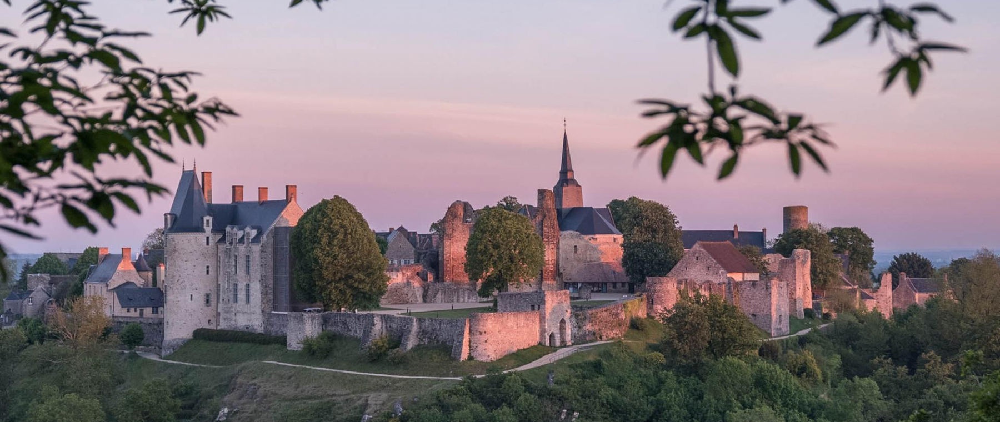

Boucle le long de l’Erve, à courir en solo ou relais par équipe de 2, 3 ou 4.
Présentation & inscription
Bienvenue aux 6 heures
La 9e édition aura lieu le samedi 23 mai 2026 dans l’un des Plus Beaux Villages de France, entre trail, fête et solidarité.
Le cadre
Un terrain de jeu médiéval
Sainte-Suzanne est une cité triplement labellisée : Plus Beaux Villages de France, Petite Cité de Caractère et Terre de Jeux 2024.
Le parcours traverse un décor rare : château, remparts, chemins en balcon, bords de l’Erve, forêt, moulins, ruelles et points de vue depuis le Tertre Ganne.
S’inscrire
Les parcours
6 courses adultes
Trails exclusivement, avec des formats solo, relais, courts, longs et horaires.
Boucle plus exigeante, solo ou relais, pour les puristes du trail.
Format court, rapide et intense, sur le même circuit que l’Esprit Trail.
Un trail roulant pour les coureurs réguliers qui veulent se tester.
Le semi des 6H : forêt, rivière, cité et passages plus cassants.
Le marathon des 6H, soit deux boucles du 21 km.
Course gratuite dans la cité, inscription sur place avant le départ.
Course gratuite dans la cité et vers la rivière, avec 50 D+.
Horaires indicatifs
Le fil de la journée
Les départs adultes s’enchaînent autour de 11h. Les animations et courses juniors rythment l’après-midi.
11h00
Esprit Trail
Départ de la boucle de 5 km en solo ou relais.
Départ de la boucle de 5 km en solo ou relais.
11h02
Course Nature
Départ de la boucle de 4 km en solo ou relais.
Départ de la boucle de 4 km en solo ou relais.
11h04
5 km solo
Départ du format court.
Départ du format court.
11h06
10 km solo
Départ du format roulant.
Départ du format roulant.
11h08
21 km solo
Départ du semi trail.
Départ du semi trail.
11h10
42 km solo
Départ du marathon trail.
Départ du marathon trail.
11h15-16h45
Bia-trail
Salves toutes les 30 minutes, inscription gratuite sur place dès 12 ans.
Salves toutes les 30 minutes, inscription gratuite sur place dès 12 ans.
15h00
Course 1000
Départ junior 7-10 ans.
Départ junior 7-10 ans.
15h15
Course 2000
Départ junior 11-16 ans.
Départ junior 11-16 ans.
Au-delà du chrono
Fête et solidarité
Le rendez-vous garde son ADN : courir sérieusement, accueillir largement, et reverser 1€ par inscription à Ruban Bleu.
Ravitos costauds
Liquide, solide, chaud, froid, salé et sucré au ravitaillement principal, plus deux ravitos secondaires.
Animations gratuites
Musique, atelier nature pour les enfants, biatrail et ambiance de village toute la journée.
Repas & concert
Repas du soir sur réservation, deux menus, option végétarienne, puis DJ jusqu’à minuit.